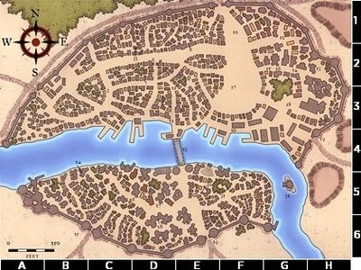

Silverymoon is one of the few civilized places in the middle of the rough and untamed wilderness that is the North of Faerûn. It has a rich cultural life and is renowned as a meeting place for all races that are morally inclined towards good. It is also famous for its pervading tradition of magic, and is home to many notable wizards, sorcerers and other mages. It has around 40.000 inhabitants.
The High Mage is the ruler of the city, the current leader is Alustriel Silverhand
The city is divided in North and South by a river, which is traversed via a magical bridge
Most of the high end shops, the marketplace, the palace, library and university mainn building are in the North
The South houses a lot of warehouses, general stores, university buildings/magic schools, baracks, modest inns/taverns
While travelling from the Evermoors to Phodiff the party stopped here for a week and shopped in the various shops. During their stay a disruption in the city prevented inhabitants from travelling between North and South due to a missing bridge control wand, the return of Alustriel seemed to solve this issue. They gathered that there is a teleportation circle present in the palace, which can be used by people who can indicate their need to use it (known locations: Waterdeep, Baldur's Gate). The found duergar orphan Kellic was brought to an orphanage/school for 'gifted' youngsters.
Tristan Harpell: A member of the afluent wizard family the Harpells, he enlisted the help of the party to rid his enheritted wing in the Ivy Mansion (north) of enchantments left by his uncle
Helm's Gift: orphanage where Kellic was brought
The Wizard's Hat: decent inn in the South where the party stayed
To Arms!: A weaponshop in the South dealing in all kinds of non magical weapons. Connected to a smithee that also rents smithing space
Leather and Binds: Leather worker selling armor, other leather works and also some wooden items
The Shining Scroll: A shop dealing in potions/scrolls, but also in magical services like identifying and enchanting objects/weapons. Owner Xara Tantlor still owes the party information on the magical ring of water breathing
Silver Quill: Large component store owned by Birad. People place orders for special components here that he will pay for if you deliver them
Optym's Blade: A shop dealing in magical and specialized armor and weapons

~BACK~